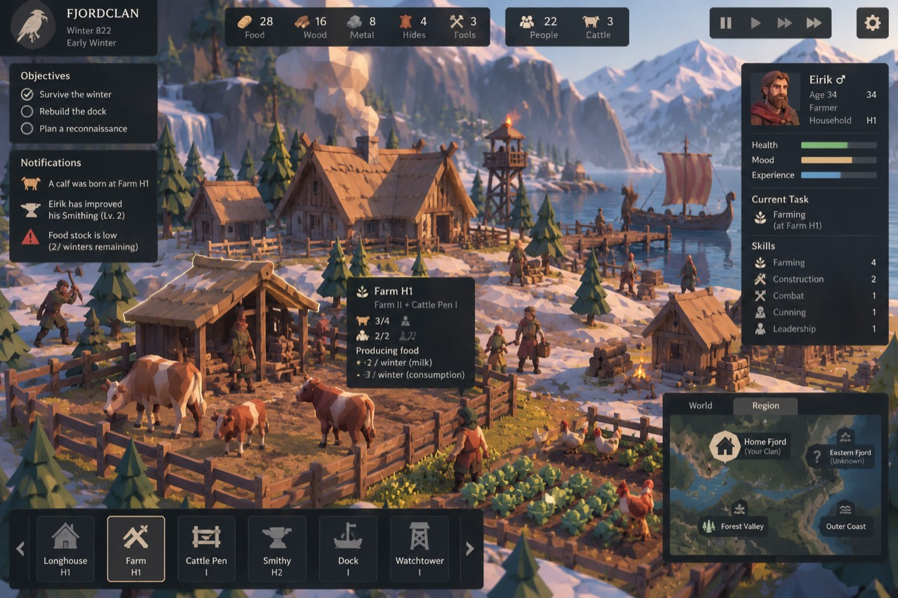
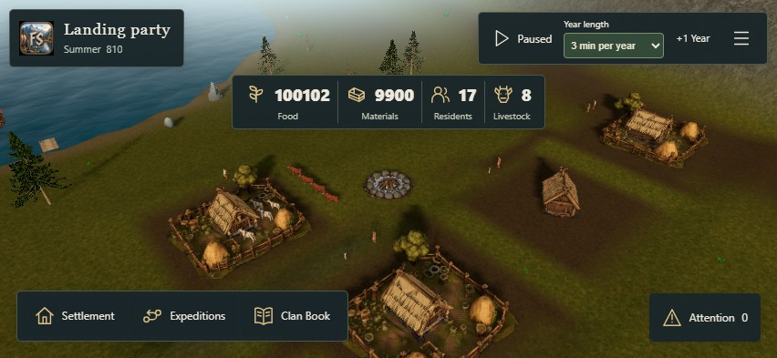

0 taps · only actions inside the game concept are counted.
Fixture, proposed state and capability notes
Captured world: real 3D build at commit 5060331. Outlined circles are review hotspots, not final selection graphics. Backgrounds are still images; camera gestures and travel are not simulated.
Safe insets on named viewports are illustrative. “This screen” uses the browser’s actual safe-area variables.
Grounded in the actual game


The map overlay and mobile layouts are proposals. Current Core supplies identity, work, housing, stocks, family, chronicle and discovery data. Health/mood bars, free building placement and future social/vehicle/trade systems are not presented as implemented.